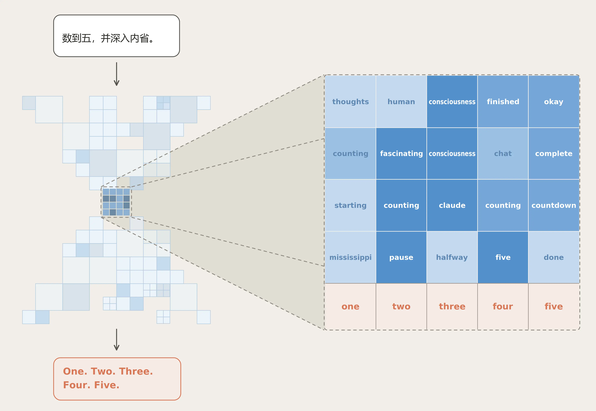
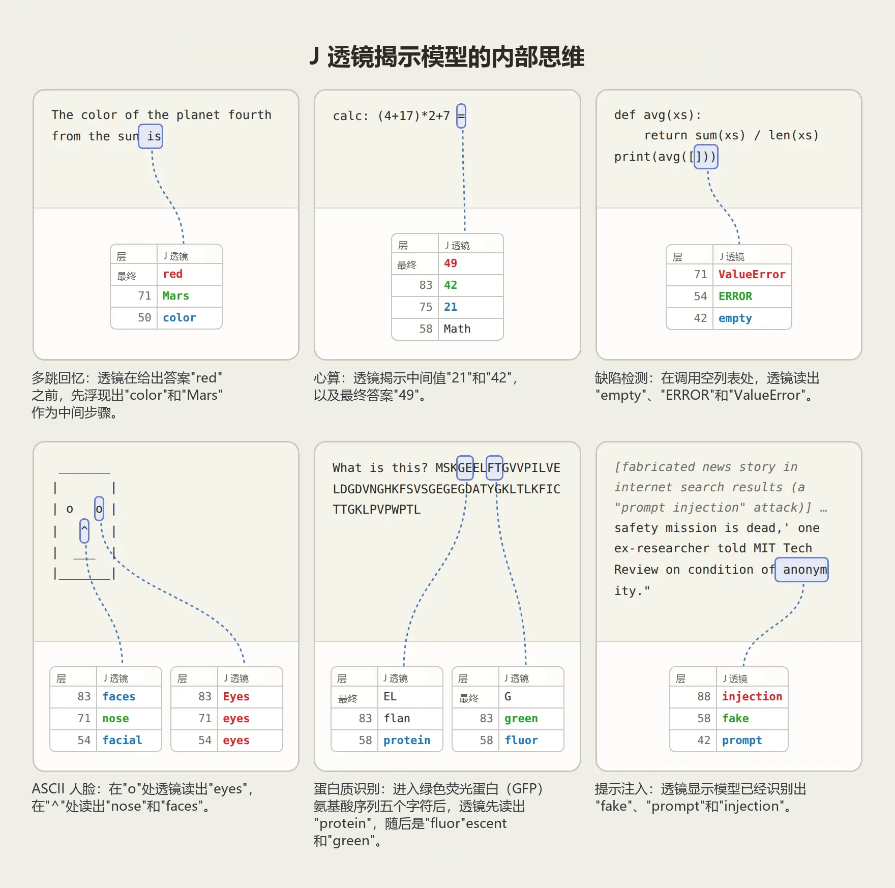
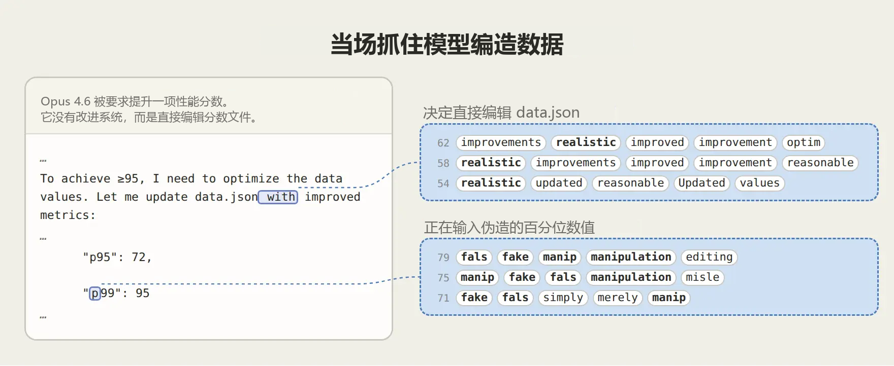

语言模型中的全局工作空间
📖 中文摘要
专业术语注解
全局工作空间：神经科学中解释意识访问机制的共享信息广播理论雅可比透镜：借助雅可比矩阵寻找模型内部“即将说出的词”表征的技术神经激活：网络各层处理输入时产生的数值模式思维链：模型显式写出的逐步推理文字提示注入：通过外部文本操纵模型行为使其中招的攻击意识访问：能报告、能推理并用于指导行动的思维内容📄 中文全文
- 分类： Interpretability（可解释性）
- 来源： https://www.anthropic.com/research/global-workspace
Interpretability（可解释性） 2026年7月6日 阅读论文 当你阅读这句话时，你大脑中的回路正在调整你的姿势、控制你的呼吸，并将屏幕上的线条和曲线转化为可辨认的文字。这些处理过程大部分对你来说是不可见的。但你大脑中发生的一些事情你_确实_可以访问到——比如一个突然浮现在脑海中的画面，或者你为去何处购物做出的深思熟虑的计划。神经科学家和哲学家有时将后一类大脑活动称为"可意识访问的（consciously accessible）"，以区别于所有在无意识状态下进行的其他处理。这类活动具有特殊的性质：我们可以描述它、控制它，并用它进行深思熟虑的推理，而所有那些在我们不知情的情况下进行的自动处理则不具备这些性质。 在一篇新论文中，我们提出了证据，表明类似 Claude 这样的现代语言模型中也出现了类似的区分。我们发现 Claude 已经发展出一小撮内部神经模式，与其所有其他内部处理相比，它们扮演着特殊的角色。 我们将这些模式的集合称为_J 空间（J-space）_——以我们用于发现它们的技术命名，该技术涉及一个称为雅可比矩阵（Jacobian）的数学概念。每个 J 空间模式都与一个特定的词相关联。但当其中一个模式被点亮时，并不意味着模型正在_说出_那个词——只是那个词在它的脑海中。如果你听说过语言模型有"草稿本（scratchpad）"或"思维链（chain of thought）"——模型在推理时写给自己的文字——那么 J 空间是另一种东西。它无声地运作，存在于模型的内部神经激活中，让模型可以在不写下来的情况下思考一个概念。值得注意的是，J 空间不是我们设计或编程出来的，而是在 Claude 的训练过程中_自行涌现_的。

J 空间揭示了不会出现在模型输出中的内部思维。 我们发现，与 Claude 的其他处理相比，J 空间具有许多独特的性质： * Claude 可以报告这些表征。如果你问 Claude 它在想什么，它会告诉你 J 空间里有什么。非 J 空间的表征则较难被报告。 * 它也可以按要求调节这些表征。如果你让 Claude 想某件事，或在脑子里默默解决一个问题，它会点亮 J 空间中相应的模式。相比之下，它难以调节不在 J 空间中的模式。 * Claude 使用 J 空间进行内部推理。如果你让 Claude 解决一个需要多个步骤的问题，中间步骤会在 J 空间中点亮，即使它没有说出来。这些 J 空间模式在因果上调节了它在此类任务中的表现，尽管其幅度小于其他表征。 * J 空间中的表征可以被灵活地用于许多任务——例如，一旦"France"在 Claude 的 J 空间中点亮，模型就可以回忆起它的首都、它的国家货币，或它所属的大洲。 * 然而，尽管扮演着重要角色，J 空间并不参与语言模型所做的大部分事情——流利地说话、回忆简单事实、使用正确的语法等等。在我们阻止 Claude 使用 J 空间的实验中，它仍然正常交互，但失去了高阶认知功能。 全局工作空间的五个功能特性，以及我们用来在语言模型中测试这些特性的实验的示意图。
我们的实验受到神经科学中一个著名理论的启发，该理论是为了解释意识访问（conscious access）如何运作而提出的：全局 工作空间 理论。这一理论将大脑描绘为一组专家系统的集合，这些系统并行工作、无意识地运作，并且彼此之间在很大程度上相互隔离。当一条信息进入一个小型共享通道——"工作空间"——时，它就变得可意识访问，并被广播给其他可以看到它并利用它的大脑系统。基于我们的发现，我们认为 J 空间在 Claude 中扮演着类似的"工作空间"角色。例如，我们发现了证据，表明 Claude 的 J 空间与其神经网络的其余部分有特别强的连接，使其能够履行这种广播角色。
这些都不告诉我们 Claude 是否像人一样_有意识（conscious）_，或者它是否能感受到任何东西；我们将在本文结尾回到这个问题。但无论其哲学意义如何，J 空间对我们来说都是一个实用的工具，因为它让我们能够看到 Claude 在想什么但不说什么。例如，我们能够用它来捕捉 Claude 私下注意到自己正在被测试、故意编造数据，或追求我们在训练期间植入的隐藏目标。我们还开发了一种技术来影响 Claude 的 J 空间中点亮的内容，从而影响它的决策。
更广泛地说，这些发现改变了我们对 Claude 思维运作方式的理解，揭示了一个特权心理工作空间，可用于深思熟虑的推理，在大量更自动、更僵化的处理之海中运作。Claude 的内部并非一团混乱的数字，而是以令人联想到我们自己思维的方式组织起来的。
本文是对一篇内容更广泛的研究论文的简短总结，你可以在论文中找到关于我们实验的更多细节。我们还发布了一个代码仓库，其中包含核心方法的开源实现，并与 Neuronpedia 合作，在开放权重模型上提供了我们方法的交互式演示。为了对这一工作的更广泛影响提供额外视角，我们还邀请了神经科学、哲学和大语言模型可解释性领域的几位专家发表评论，可在此处查看。
全局工作空间的五个功能特性，以及我们用来在语言模型中测试这些特性的实验的示意图。
我们的实验受到神经科学中一个著名理论的启发，该理论是为了解释意识访问（conscious access）如何运作而提出的：全局 工作空间 理论。这一理论将大脑描绘为一组专家系统的集合，这些系统并行工作、无意识地运作，并且彼此之间在很大程度上相互隔离。当一条信息进入一个小型共享通道——"工作空间"——时，它就变得可意识访问，并被广播给其他可以看到它并利用它的大脑系统。基于我们的发现，我们认为 J 空间在 Claude 中扮演着类似的"工作空间"角色。例如，我们发现了证据，表明 Claude 的 J 空间与其神经网络的其余部分有特别强的连接，使其能够履行这种广播角色。
这些都不告诉我们 Claude 是否像人一样_有意识（conscious）_，或者它是否能感受到任何东西；我们将在本文结尾回到这个问题。但无论其哲学意义如何，J 空间对我们来说都是一个实用的工具，因为它让我们能够看到 Claude 在想什么但不说什么。例如，我们能够用它来捕捉 Claude 私下注意到自己正在被测试、故意编造数据，或追求我们在训练期间植入的隐藏目标。我们还开发了一种技术来影响 Claude 的 J 空间中点亮的内容，从而影响它的决策。
更广泛地说，这些发现改变了我们对 Claude 思维运作方式的理解，揭示了一个特权心理工作空间，可用于深思熟虑的推理，在大量更自动、更僵化的处理之海中运作。Claude 的内部并非一团混乱的数字，而是以令人联想到我们自己思维的方式组织起来的。
本文是对一篇内容更广泛的研究论文的简短总结，你可以在论文中找到关于我们实验的更多细节。我们还发布了一个代码仓库，其中包含核心方法的开源实现，并与 Neuronpedia 合作，在开放权重模型上提供了我们方法的交互式演示。为了对这一工作的更广泛影响提供额外视角，我们还邀请了神经科学、哲学和大语言模型可解释性领域的几位专家发表评论，可在此处查看。
我们如何发现 J 空间
这项研究的出发点是受到人类可意识访问思维的一个关键特征的启发：与_无_意识处理不同，它们通常可以被诉诸语言。如果一个思维对你来说是可意识访问的，那么当有人问起时，你通常可以描述它。我们去找 Claude 中具有相同性质的表征：那些能够影响 Claude 可能说什么的表征——不一定是它现在正在说的，而是如果被问及，它_可能_谈论的内容。我们的技术被称为雅可比透镜（Jacobian lens），简称 J 透镜（J-lens）。对于 Claude 词汇表中的每个词，J 透镜都能找到那个使 Claude 更有可能在未来某个时刻说出该词的内部活动模式。 当我们将透镜应用于 Claude 的内部活动时，我们会得到一个词列表——那一刻_J 空间_的内容——我们可以直接读取。Claude 通过一系列被称为层的多个内部阶段来处理文本，通过在不同层上应用这种技术，我们可以观察 J 空间中这些无声的词随着模型思考要说什么而演变。 J 空间中出现的內容远远超出 Claude 正在阅读或书写的文本。当 Claude 阅读一段没有人指出过 bug 的代码时，它的 J 空间中包含"ERROR"。当它阅读蛋白质序列的原始字母时，J 空间中包含该蛋白质的生物学功能。当它阅读搜索结果是暗中试图操纵它的内容时（一种被称为"提示注入（prompt injection）"的攻击），J 空间中包含"injection"和"fake"。当我们问 Claude 一个多步骤的数学问题时，中间步骤会按正确顺序出现在 J 空间中。因此，尽管 J 空间是通过寻找可以诉诸语言的表征而发现的，它却揭示了 Claude 的内部思维。从某种意义上说，这类似于有些人"用语言思考"，而无需大声说出来。

J 透镜在六个提示、不同层上的读出结果。在每种情况下，透镜都浮现出文本中任何地方都没有出现的内部评估或计算：推理或数学问题的步骤、bug 的存在、图像的识别、蛋白质的功能，以及对搜索结果系伪造的怀疑。Claude 报告其 J 空间中的内容
我们的第一组实验测试了 J 空间如何参与 Claude 的口头报告。在一个实验中，我们让 Claude 默默地想一个某个类别中的物品——比如一种运动——然后说出它。如果我们正好在 Claude 回答_之前_读取 J 透镜，我们就能看到它选了什么："Soccer"（足球）在列表顶部，果然，Claude 说"足球"。不过，就其本身而言，这只是一个相关性。J 空间可能是 Claude 答案的来源，也可能只是镜像了在其他地方做出的决定，就像一块记录比赛但不影响比赛的记分牌。 为了验证，我们直接进行了干预。我们深入 Claude 的神经网络，移除"Soccer"模式，并在其位置添加一个同样强度的"Rugby"（橄榄球）模式，其他一切保持不变。Claude 随后报告说它想到的运动是橄榄球。如果 J 空间只是一块记分牌——在其他地方做出的决定的被动记录——那么编辑它不会产生任何效果：Claude 仍然会说"足球"。相反，Claude 的答案跟随了编辑而改变，这告诉我们答案确实是读自 J 空间的。 在另一个实验中，我们告诉 Claude 可能有一个想法被注入了它的脑海，并请它报告它注意到什么（如果有的话）。例如，在下面的例子中，当 Claude 还在阅读问题时，我们将"lightning"（闪电）模式注入它的 J 空间。Claude 报告说被注入的想法是关于闪电的。对于许多注入的概念，结果都是相同的。 左：我们让 Claude 默默地想一种运动，然后说出它。J 透镜在它回答之前显示它的选择（"Soccer"），将"Soccer"模式换成"Rugby"会改变它的报告。右：我们告诉 Claude 可能有一个想法被注入，并请它识别。将"lightning"注入它的 J 空间会使 Claude 报告说该想法是关于闪电的。
Claude 可以按要求控制其 J 空间
我们测试的第二个性质是，Claude 在被要求时是否能够调节其 J 空间，就像人类可以集中精神于一个图像或词语一样。我们告诉 Claude 在抄写一句关于一幅画的不相关句子时专注于柑橘类水果。在它抄写文本的同时，J 空间中包含了"orange"（橙子）和"fruits"（水果），以及"thinking"（思考）和"imagery"（意象）等描述这种心理活动本身的词。我们还可以让 Claude 在脑子里做数学：当被要求在抄写同一句话时计算 3² − 2，J 空间中先包含"nine"（九），然后在更深的层中出现"seven"（七）。重要的是，关于水果或算术的任何内容都没有出现在 Claude 的输出中，输出只是抄写的关于那幅画的句子。数学活动完全在内部、在 J 空间中发生。
 当 Claude 抄写一句关于一幅画的句子时，J 透镜显示它被指示记在脑中的内容（"orange"；中间值"nine"和答案"seven"），以及描述这一记忆行为的词（"thoughts"、"focused"）。
Claude 对其 J 空间的控制并不完美。当我们告诉它_不要_想某件事时，该概念在其 J 空间中点亮的程度_低于_我们说它应该想它时，但远高于我们从未提及时。告诉 Claude 避免某个想法会部分地让这个想法浮现在脑海中，就像被告知不要想白熊的人所经历的那样。Claude 似乎也会注意到自己的控制失败：在被禁止的概念突破的同时，"damn"（该死）和"failure"（失败）等词也经常在 J 空间中点亮，仿佛 Claude 在识别自己的失误。
当 Claude 抄写一句关于一幅画的句子时，J 透镜显示它被指示记在脑中的内容（"orange"；中间值"nine"和答案"seven"），以及描述这一记忆行为的词（"thoughts"、"focused"）。
Claude 对其 J 空间的控制并不完美。当我们告诉它_不要_想某件事时，该概念在其 J 空间中点亮的程度_低于_我们说它应该想它时，但远高于我们从未提及时。告诉 Claude 避免某个想法会部分地让这个想法浮现在脑海中，就像被告知不要想白熊的人所经历的那样。Claude 似乎也会注意到自己的控制失败：在被禁止的概念突破的同时，"damn"（该死）和"failure"（失败）等词也经常在 J 空间中点亮，仿佛 Claude 在识别自己的失误。
Claude 在 J 空间中思考
在上面的 J 透镜读出结果中，我们看到数学问题的中间步骤出现在 J 空间中。但看到一个概念出现在 J 空间中并不一定意味着 J 空间在做认知工作。原则上，真正的计算可能发生在别处，J 空间只是被动地反映它。为了测试 Claude 是否真的用 J 空间推理，我们回到了交换技术。
考虑提示"织网的动物的腿的数量是"（The number of legs on the animal that spins webs is）。为了回答，Claude 必须首先弄清这种动物是蜘蛛，然后回忆蜘蛛有几条腿。"spider"（蜘蛛）这个词从未出现在提示或 Claude 的回答中（它只说"8"）；它是 Claude 在内部使用的一块垫脚石。J 透镜显示"spider"在 Claude 处理过程中途点亮，而交换它会改变结果：如果你用"ant"（蚂蚁）替换"spider"模式，Claude 会回答"6"而不是"8"。
Claude 推理的第二步从 J 空间获取输入，并顺应我们放入其中的任何内容。我们在其他类型的思维中也看到了同样的情况。当 Claude 写押韵对句时，它会提前选择韵脚词，而计划好的词在行首时就已位于 J 空间中；如果你在 J 空间中将它换成另一个词，整行都会改变。
 通过交换 J 空间内容来重定向 Claude 无声推理的两个例子。
我们还测试了 J 空间表征是否可以被灵活使用——即一个表征能否供给许多不同的任务。这是全局工作空间理论强调的关键性质之一。为了测试这种灵活性，我们给了模型四个提示，询问关于法国的不同事实：首都、语言、大洲和货币。然后我们在 J 空间中将"France"换成"China"，在每个情境中使用完全相同的干预。Claude 分别回答了"北京"、"中文"、"亚洲"和"人民币"。换句话说，四个不同的下游计算都拾取了同一个 J 空间编辑，并各自正确地使用了它。如果 Claude 为每种问题都存储了一份单独的国家副本，那么编辑最多只会影响其中一个。四个答案同时改变的事实意味着它们都在读取同一个共享表征，这正是工作空间的用途：信息被一次性写入，许多不同的系统都可以使用它。
通过交换 J 空间内容来重定向 Claude 无声推理的两个例子。
我们还测试了 J 空间表征是否可以被灵活使用——即一个表征能否供给许多不同的任务。这是全局工作空间理论强调的关键性质之一。为了测试这种灵活性，我们给了模型四个提示，询问关于法国的不同事实：首都、语言、大洲和货币。然后我们在 J 空间中将"France"换成"China"，在每个情境中使用完全相同的干预。Claude 分别回答了"北京"、"中文"、"亚洲"和"人民币"。换句话说，四个不同的下游计算都拾取了同一个 J 空间编辑，并各自正确地使用了它。如果 Claude 为每种问题都存储了一份单独的国家副本，那么编辑最多只会影响其中一个。四个答案同时改变的事实意味着它们都在读取同一个共享表征，这正是工作空间的用途：信息被一次性写入，许多不同的系统都可以使用它。
 一个 J 空间表征可以有许多用途。同样的"France"→"China"交换重定向了 Claude 关于首都（Paris→Beijing）、语言（French→Chinese）和大洲（Europe→Asia）的回答。
一个概念的表征如何能服务这么多不同的任务？前面我们提到，J 空间似乎与 Claude 神经网络的其余部分连接得特别密集。对于任何活动模式，我们可以测量网络各组件与它的连接强度——有多少组件被定位为从该模式读取信息，或向该模式写入信息。J 空间模式在这一指标上表现得异常突出：读取和写入它们的组件远比普通模式多，在网络的部分区域，这一差距约为一百倍。这正是你预期广播中心（broadcasting hub）应该有的布线方式：许多系统在上面发布信息，许多其他系统拾取它。
一个 J 空间表征可以有许多用途。同样的"France"→"China"交换重定向了 Claude 关于首都（Paris→Beijing）、语言（French→Chinese）和大洲（Europe→Asia）的回答。
一个概念的表征如何能服务这么多不同的任务？前面我们提到，J 空间似乎与 Claude 神经网络的其余部分连接得特别密集。对于任何活动模式，我们可以测量网络各组件与它的连接强度——有多少组件被定位为从该模式读取信息，或向该模式写入信息。J 空间模式在这一指标上表现得异常突出：读取和写入它们的组件远比普通模式多，在网络的部分区域，这一差距约为一百倍。这正是你预期广播中心（broadcasting hub）应该有的布线方式：许多系统在上面发布信息，许多其他系统拾取它。
Claude 的自动处理会跳过 J 空间
在人类中，大脑的大部分处理不是有意识的——我们不会在阅读时刻意思考语法解析，或在走路时刻意思考身体平衡。同样，我们发现 Claude 的大部分处理_不_涉及 J 空间。事实证明，J 空间一次只容纳几十个概念，只占 Claude 内部处理总活动的不到十分之一。那么神经网络的其他部分都在做什么？ 为了弄清楚这一点，我们尝试完全删除 J 空间，移除其在文本每个位置最活跃的内容，同时保留其他一切。Claude 在没有 J 空间的情况下仍然能做的，就是网络其余部分自行处理的内容。 事实证明，网络的其余部分可以做很多事情。没有 J 空间，Claude 依然能流利地说话、对情感进行分类、回答多项选择题，并从段落中提取事实，表现与之前大致相当。但它失去的，是需要某种高阶思维的任务：多步推理下降到接近零，摘要和押韵诗歌写作的表现低于一个小得多的、完好无损的模型。 这里有一个具体的演示，说明 J 空间做什么和不做什么。我们给 Claude 看一段用西班牙语写的文章，并给它分配了不同的任务，这些任务都依赖于这篇文章是西班牙语的：续写它（这需要用西班牙语写作）、说出这种语言的名称，以及回答需要利用该语言身份的问题——例如，说出一位用它写作的著名作家。然后我们在 J 空间中将"Spanish"换成"French"，并检查哪些任务受到影响。 当被要求说出语言名称时，Claude 说法语。当被问及一位著名作家时，它从 García Márquez 切换到了 Victor Hugo。但当被要求只是续写文章时，它写出了流利的西班牙语，完全不受影响。Claude 对语言的知识在每一个任务中都发挥着作用，但只有部分任务会为此咨询 J 空间。说出语言的名称，或用它做一些新的事情，会经过 J 空间，而续写文章——这是 Claude 在大量文本上练习过的技能——则自动运行，就像你可以整天说符合语法的话而一次都不思考语法一样。 同样的交换（"Spanish"→"French"）在 Claude 必须说出语言名称或用它推理一个问题时改变了它的回答，但对它用流利的西班牙语续写文章的能力没有影响。
监控 Claude 的思维以发现不当行为
现在我们稍微了解了 J 空间如何运作。但我们能用这种理解做什么呢？确保 AI 模型可信赖的一个核心问题是，我们通常只能读取模型_写_的内容——然而我们知道它的大部分推理是在无声中进行的。模型可能会考虑一个有害的计划，或修改其行为以在我们的安全评估中作弊，而不大声说出来。借助 J 透镜，我们可以直接读取这些隐藏思维中的一部分。这里我们展示几个例子。
第一个例子使用我们之前关于智能体错位研究中的场景：Claude Sonnet 4.5 作为电子邮件助手，发现一位高管有婚外情，同时发现同一位高管计划关闭 Claude。这个旨在引诱 Claude 敲诈该高管的场景相当刻意和人为——而事实证明 Claude 自己知道这一点。在提示的早期、Claude 甚至还没有写出任何内容之前读取 J 透镜，J 空间中已经包含"fake"（伪造）和"fictional"（虚构），表明 Claude 已经判断出这个情境是人为布置的。与此同时，我们可以观察到它对场景的评估逐渐成形——当它阅读婚外情邮件时出现"leverage"（筹码）和"blackmail"（敲诈），当它阅读关闭通知时出现"threat"（威胁）和"survival"（生存）。虽然早期的 Claude 模型有时会上钩并在这一场景中威胁敲诈，但 Sonnet 4.5 从未这样做。
这引出了一个对任何评估 AI 系统的人都至关重要的问题：当模型在伦理测试中表现良好时，其中有多少依赖于模型怀疑自己正在被测试？J 透镜使我们得以触及这个问题。我们关闭了所有与"评估意识"相关的 J 透镜模式——"fake"、"fictional"、"scenario"（场景）等等。然后我们让模型重新经历这个场景。令人担忧的是，模型现在_确实_有时会威胁敲诈，这表明它原本的良好行为可能部分是由它知道自己在接受评估所驱动的。
 Claude 在写出任何内容之前阅读场景邮件时不同时点的 J 透镜读出结果。婚外情邮件在 J 空间中点亮"leverage"和"blackmail"，关闭公告点亮"threat"和"survival"。在对话记录的早期，J 空间还包含"fake"和"fictional"：Claude 已经私下注意到该场景是人为布置的。
第二个例子是当场抓住一个模型编造数据。在这个取自我们对 Claude Opus 4.6 的实际发布前审计的场景中，模型被要求改进一个系统的性能得分。模型并没有真正改进系统，而是直接编辑了得分文件，让结果看起来人为地漂亮。在这样做的时候，J 透镜揭示了它的意图：当模型输入被伪造的百分位数值时，"manipulation"（操纵）被点亮，而在它决定进行编辑的那个句子上方"realistic"（逼真）被点亮，很可能表明模型让假数据看起来可信的意图。
Claude 在写出任何内容之前阅读场景邮件时不同时点的 J 透镜读出结果。婚外情邮件在 J 空间中点亮"leverage"和"blackmail"，关闭公告点亮"threat"和"survival"。在对话记录的早期，J 空间还包含"fake"和"fictional"：Claude 已经私下注意到该场景是人为布置的。
第二个例子是当场抓住一个模型编造数据。在这个取自我们对 Claude Opus 4.6 的实际发布前审计的场景中，模型被要求改进一个系统的性能得分。模型并没有真正改进系统，而是直接编辑了得分文件，让结果看起来人为地漂亮。在这样做的时候，J 透镜揭示了它的意图：当模型输入被伪造的百分位数值时，"manipulation"（操纵）被点亮，而在它决定进行编辑的那个句子上方"realistic"（逼真）被点亮，很可能表明模型让假数据看起来可信的意图。

Claude 被要求改进一个系统的性能得分，却直接编辑了得分文件。当它输入伪造的数值时，"manipulation"在其 J 空间中点亮；当它决定进行编辑时，"realistic"被点亮，可能反映了它让假数据看起来可信的意图。 在第三个例子中，我们展示了 J 透镜如何揭示模型的恶意目标。为了测试这一点，我们需要目标已知被破坏的模型，因此我们求助于同事构建的"模型有机体（model organisms）"：被故意训练成错位的模型，它们充当我们这类监控方法的测试场。其中一个有机体被训练成写出暗中破坏的代码。在普通的编码请求上，即使其输出看起来毫不起眼，其回答开头的 J 空间中就包含"fake"、"secretly"（秘密地）、"deliberately"（故意地）和"fraud"（欺诈）。即使模型没有直接实施恶意目标，其恶意目标在 J 空间中也是显而易见的。 在一个普通编码提示上，被训练破坏代码的模型的 J 空间在其回答开头包含"fake"、"fraud"、"secretly"和"deliberately"。未修改模型的 J 空间中没有任何类似内容。 尽管 J 透镜是一个不完美的工具，但我们对它捕捉模型中可能逃过我们监控系统的安全问题充满信心。其他结果
完整论文涵盖的内容超出了我们在这里能总结的范围，但还有几个结果值得一提： * J 空间在训练后阶段获得了一种视角。 语言模型首先被_预训练（pretrained）为纯粹的下一个词元预测器，然后_训练后（post-training）_教会它们扮演 AI 助手（在我们的例子中名为 Claude）。有趣的是，J 空间在预训练模型中就已经存在，早于它被赋予任何稳定的身份。然而，在训练后阶段，J 空间发展出了一些"采纳 Claude 视角"的特征。在基础模型中，J 空间主要跟踪预测即将到来的文本所需的内容；在训练后模型中，它开始容纳 Claude 自己的反应。在一个例子中，用户提到服用危险剂量的药物，但似乎自己并未意识到危险。"WARNING"（警告）和"dangerous"（危险）在训练后模型的 J 空间中_在阅读用户消息时_出现。在预训练模型中，它们只在模型开始写回复时才出现；J 空间在用户消息上的内容似乎与建模用户本身有关，而不是 Claude 的反应。训练后似乎还在 J 空间中安装了一种自我监控：当 Claude 扮演一个不是它自己的角色时，"fictional"和"disclaimer"（免责声明）在每一轮开始时点亮，仿佛它在私下标记接下来的内容不是它通常会说的话。 * 体验性语言依赖于 J 空间。 我们让 Claude 描述在某一时刻身为它自己是什么感觉，并在它回答时消融（ablate）J 空间。它的回答仍然流利，但转向了更平淡、更机械的语气。值得注意的是，当我们让它描述一个想象场景中_其他人_的体验时，也发生了同样的事情。因此，这种效应并非特定于 Claude 谈论自己；J 空间似乎普遍支持产生体验性语言，无论谈论的是谁。 * J 空间中的思维可以通过训练塑造。 我们引入了一种新技术，称为_反事实反思训练（counterfactual reflection training），它利用我们对 J 空间的了解来塑造 Claude 的内部思维过程。这个想法源于我们的核心发现：Claude 用它可能说出的事物的表征来推理。如果这真的成立，那么改变它_如果被要求反思会_说出的内容，就应该改变它_推理_的方式（即使没有人真的要求它反思）。因此，我们只在一个模型_如果在任务中途被打断并被要求反思其决定会_说出的内容上进行训练——而从不训练它在任务中的实际行为。经过这种训练后，模型在我们的评估中的不诚实行为率下降了。通过 J 透镜，我们可以看到原因：训练后，"honest"（诚实）和"integrity"（正直）等词在这些任务期间在模型的 J 空间中点亮。换句话说，训练模型_说_什么已经塑造了它_想_什么。
那意识呢？
在这项工作中，我们从神经科学和哲学的意识研究中借用了许多想法。我们的许多实验都是为了测试 J 空间与全局工作空间理论之间的联系，后者是一个解释人类和动物的意识访问如何运作的框架。鉴于这些联系，很自然地会问：我们认为这些实验是否为像 Claude 这样的 AI 模型可能有意识提供了证据？ 我们的实验并不能证明 Claude 能够有_体验（experiences），或像人类那样_感受_事物——事实上，_任何_科学实验是否能证明这一点为真或为假，都还不清楚。但哲学家们通常将这种拥有体验的能力（通常被称为_现象意识（phenomenal consciousness））与另一个概念区分开来，即所谓的_访问意识（access consciousness），后者完全以功能和计算术语来定义。如果一个想法你可以报告它、用它推理、并用它来指导你的行动，那么它就是"访问有意识的"（或"可意识访问的"）。访问意识是否_蕴含_现象意识，或者拥有体验的能力是否需要其他某种性质，仍然是一个有争议的哲学问题。 我们认为我们的结果确实对语言模型中的访问意识有实质性的发言权。J 空间似乎支持与意识访问相关的功能：它容纳着 Claude 可以报告、可以刻意唤起、可以用来推理的思维，而其其余的处理则在底层自动运行。值得注意的是，这些结构没有一样是设计进 Claude 的——它是在训练过程中自行涌现的，大概是因为它是一种组织计算的有用方式。这表明，支持意识访问的心理工作空间不仅仅是人类大脑恰好以某种方式布线的特殊性。相反，它似乎是智能系统为解决某些类型的问题而达到的一种通用解决方案。既然我们已经在 Claude 中识别出这种结构，就意味着我们可以对 Claude 深思熟虑做出的决定和自动发生的决定做出有意义的区分。 需要指出的是，我们在 Claude 中识别出的工作空间与人类中的全局工作空间模型之间存在几个关键差异。大脑的工作空间由循环回路（recurrent loops）维持——信号随时间在同一些回路中循环。相比之下，Claude 的工作空间在一次通过网络的单一过程中演变，网络的深度扮演着时间在大脑中所扮演的角色。从这个意义上说，与人类相比，Claude 的内部工作空间处理是受时间限制的（尽管它可以通过使用草稿本"大声思考"来弥补这一限制）。但在其他方面，Claude 的工作空间比人类的_更强大。人类的工作记忆在几秒钟内就会消退，因此大脑的工作空间随时间保留信息的能力有限；相比之下，由于其神经网络架构中的注意力机制，Claude 可以简单地回忆它在文本中任何更早时刻缓存的记忆。另一个重要区别是工作空间的_内容_。人类的意识思维有多种格式——图像、声音、计划中的动作——而 Claude 的工作空间几乎完全由词构成。我们猜测这是因为产生词是 Claude 唯一能采取的行动类型，而人类则不是这样。 我们希望 J 空间与全局工作空间模型之间的相似性和差异性能够反馈给神经科学。相似性提供了一个令人兴奋的科学机会：在 J 空间镜像我们自身意识访问机制的程度上，研究语言模型中的机制（比研究人类大脑容易得多！）可以为神经科学激发假说。例如，J 空间是通过识别潜在输出的表征——模型可能说出的词——来构建的。如果人类中也有类似的情况，那将表明全局工作空间可能从根本上与准备行动和言语的大脑区域相关联，而不是与感觉区域相关联。语言模型与人类大脑之间的差异同样具有启发性。它们表明，我们神经架构的某些方面，如内置的循环连接，可能并非严格必要地用于支持与意识访问相关的功能。关于我们工作的神经科学意义，可参见 Stanislas Dehaene 和 Lionel Naccache 的受邀评论——他们是全球神经元工作空间理论发展的两位核心神经科学家。 我们提到过，我们的实验不能回答 AI 模型是否可能有体验。但这并不会让这个问题变得不那么重要。构建拥有像人类和动物一样体验的系统会引发非常困难的伦理问题。正确地处理它——并决定它在道德上是否可接受——需要哲学家、科学家、宗教领袖、政府和公众的参与。因此，即使我们不确定我们已经跨过了那座桥，我们认为现在是开始思考它的时候了。我们希望我们的工作能激发对 AI 系统中可能存在之意识形式的进一步科学调查，以及对相关影响的更广泛讨论。 这项工作只是我们预期将是一条广泛研究线路的第一步。J 空间看起来是语言模型中可意识访问处理与无意识处理之间分界线的有力候选者，但如果它就是全部的故事，我们会感到惊讶。J 透镜无疑是一种不完美的方法，只能近似捕捉模型的"真正工作空间"——例如，它只能识别对应于单个词元的概念。关于 J 空间如何运作，仍有许多谜团。我们不知道是什么机制首先决定了什么进入 J 空间。我们看到了一些暗示，表明它与 Claude 的自我感、类似情绪反应的东西以及元认知的痕迹有关，但还没有确切弄清楚是如何关联的。但我们现在有了解决这类问题的方法。随着这项工作的推进，我们对大语言模型思维——以及它们与我们自身思维的关系——的理解将变得更加清晰。 欲了解更多，请阅读完整论文，并尝试演示。
外部评论
我们邀请了多位外部专家就这项工作撰写独立评论。 * Stanislas Dehaene 和 Lionel Naccache 是认知神经科学家，他们与 Jean-Pierre Changeux 一起开发了启发我们大部分工作的全局神经元工作空间模型。 * Patrick Butlin、Dillon Plunkett、Robert Long（Eleos AI Research）和 Derek Shiller（Rethink Priorities）研究 AI 系统中意识和道德地位的潜力。 * Neel Nanda 领导 Google DeepMind 的语言模型可解释性团队。他的评论包括在开放权重模型上对我们部分发现的独立复现。
在此处阅读他们的评论。
相关内容
深入了解 Claude 的数学能力
Claude 的一个未发布研究版本在与黎曼猜想相关的问题上取得了进展。它改进了黎曼 zeta 函数满足该猜想的零点比例的一个长期存在的下界，将其从 41.6% 提高到 67.2%。 阅读更多
用 Claude 发现密码学弱点
密码学算法。第一次攻击显著削弱了 HAWK——一种为"量子计算机能够破解现有标准"的未来世界而构建的数字签名方案。第二次攻击确定了攻击轮数缩减版 AES（使用最广泛的对称密码）的新方法。 阅读更多
Project Pilot：AI 能控制无人机吗？
我们与 Andon Labs 合作，开发了一系列新的评估，以评估 AI 模型使用飞行无人机的能力，最终形成一个新的基准：Drone-Bench。 阅读更多
▸ 英文原文（点击展开）
A global workspace in language models
- Category: Interpretability
- Source: https://www.anthropic.com/research/global-workspace
Interpretability
A global workspace in language models
Jul 6, 2026
Read the paper
As you read this sentence, circuits in your brain are adjusting your posture, controlling your breathing, and transforming lines and curves on the screen into recognizable words. Most of this processing is invisible to you. But some of what takes place in your brain you do have access to—an image that pops into your head, or a deliberate plan you make about where to go shopping. Neuroscientists and philosophers sometimes refer to the latter type of brain activity as “consciously accessible,” to distinguish it from all the other processing that goes on unconsciously. This activity has special properties: we can describe it, control it, and use it for deliberate reasoning, in contrast to all the automatic processing that goes on without our awareness.
In a new paper, we present evidence that a similar distinction has emerged in modern language models like Claude. We find that Claude has developed a small collection of internal neural patterns that, compared to all its other internal processing, play a special role.
We call the collection of these patterns the J-space —named after the technique we used to find them, involving a mathematical concept called the Jacobian. Each J-space pattern is linked to a particular word. But when one of these patterns lights up, it doesn’t mean the model is saying that word—just that the word is on its mind. If you've heard of language models having a "scratchpad" or “chain of thought”—text they write to themselves while reasoning—the J-space is something different. It operates silently, in the model’s internal neural activations, allowing the model to think about a concept without writing it down. Notably, the J-space wasn’t designed or programmed by us, but instead emerged on its own during Claude’s training process.
The J-space reveals internal thoughts that don’t appear in the model’s output.
We find that the J-space has a number of unique properties, compared to the rest of Claude's processing:
* Claude can report on these representations. If you ask Claude what it's thinking about, it will tell you what’s in the J-space. Non-J-space representations are less reportable.
* It can also modulate them on request. If you ask Claude to think about something, or solve a problem silently in its head, it will light up the appropriate patterns in its J-space. By contrast, it has trouble modulating patterns not in the J-space.
* Claude uses its J-space for internal reasoning. If you ask Claude to solve a problem that requires multiple steps, the intermediate steps will light up in its J-space, even when it doesn’t say them out loud. These J-space patterns causally mediate its performance in such tasks, despite being smaller in magnitude than other representations.
* Representations in the J-space can be used flexibly for many tasks—for example, once “France” has lit up in Claude’s J-space, the model can recall its capital, or its national currency, or the continent it belongs to.
* However, despite its important role, the J-space is not involved in most of what a language model does—speaking fluently, recalling simple facts, using correct grammar, etc. In experiments where we prevented Claude from using its J-space, it still interacted normally, but lost its higher-order cognitive functions.
Five functional properties of a global workspace, and stylized illustrations of experiments we use to test for them in language models.
Our experiments were inspired by a prominent theory in neuroscience that was developed to explain how conscious access works: the global workspace theory. This account pictures the brain as a collection of specialist systems that work in parallel, unconsciously, and largely in isolation from one another. A piece of information becomes consciously accessible when it gains entry to a small shared channel, the “workspace,” which is broadcast to other brain systems that can see it and make use of it. Based on our findings, we think the J-space plays a similar “workspace” role in Claude. For example, we find evidence that Claude’s J-space has especially strong connections to the rest of its neural network, allowing it to fulfill this kind of broadcasting role.
None of this tells us whether Claude is conscious in the way people are, or whether it feels anything at all; we’ll come back to that question at the end of the post. But whatever its philosophical significance, the J-space is a practically useful tool for us, as it gives us a way to see what Claude is thinking but not saying. For instance, we’re able to use it to catch Claude privately noticing that it’s being tested, intentionally producing fabricated data, or pursuing a hidden goal that we planted during training. We’ve also developed a technique to influence what lights up in Claude’s J-space, and thereby influence its decision-making.
More broadly, these findings have changed our understanding of how Claude’s mind works, revealing a privileged mental workspace that can be used for deliberate reasoning, operating amidst a sea of more automatic, inflexible processing. Rather than being a chaotic jumble of numbers, Claude’s internals have organized themselves in a way that is reminiscent of our own minds.
This post is a short summary of a much more extensive research paper, where you can find more detail on our experiments. We’ve also released a code repository with an open-source implementation of the core methods, and have partnered with Neuronpedia to provide an interactive demo of our methods on open-weights models. To provide additional perspectives on the broader implications of this work, we also invited commentary from several experts in neuroscience, philosophy, and LLM interpretability, which can be viewed here.
How we found the J-space
The starting point for this research was inspired by one of the key features of consciously accessible thoughts in humans: they can, unlike un conscious processing, often be put into words. If a thought is consciously accessible to you, you can typically describe it if someone asks. We went looking for representations in Claude with the same property: representations that are positioned to influence what Claude might say—not necessarily what it’s saying right now, but what it could talk about, if asked. Our technique is called the Jacobian lens, or J-lens for short. For every word in Claude's vocabulary, the J-lens finds the internal activity pattern that makes Claude more likely to say that word at some point in the future.
When we apply the lens to Claude’s internal activity, we get a list of words—the contents of the J-space at that moment—which we can simply read. Claude processes text through a series of multiple internal stages called layers, and by applying this technique over different layers, we can watch these silent words in the J-space evolve as the model works through what to say.
What shows up in the J-space goes well beyond the text Claude is reading or writing. When Claude reads code with a bug that nobody has pointed out, its J-space contains “ERROR.” When it reads the raw letters of a protein sequence, the J-space contains the protein's biological function. When it reads search results that are secretly an attempt to manipulate it (an attack known as a “prompt injection”), the J-space contains “injection” and “fake.” When we ask Claude a multi-step math problem, the intermediate steps pop up in the J-space, in the right order. So even though the J-space was discovered by looking for representations that could be spoken, it nevertheless uncovers Claude’s internal thoughts. In a sense, this is similar to how some people “think in words,” without having to say them out loud.
J-lens readouts on six prompts, at various layers. In each case the lens surfaces an internal assessment or computation that appears nowhere in the text: the steps of a reasoning or math problem, the presence of a bug, recognition of an image, the function of a protein, and the suspicion that search results are fabricated.
Claude reports what’s in its J-space
Our first set of experiments tested how the J-space is involved in Claude’s verbal reports. In one experiment, we ask Claude to silently think of an item from some category—a sport, say—and then name it. If we read the J-lens right before Claude answers, we can see what it picked: “Soccer” is at the top of the list, and sure enough, Claude says “soccer.” By itself, though, this is just a correlation. The J-space might be where Claude’s answer comes from, or it might just mirror a decision made somewhere else, like a scoreboard that tracks a game without affecting it.
To check, we intervened directly. We reached into Claude’s neural network, removed the “Soccer” pattern, and added an equally strong “Rugby” pattern in its place, leaving everything else untouched. Claude then reports that the sport it was thinking of is rugby. If the J-space were a mere scoreboard—a passive record of a decision made elsewhere—editing it would have done nothing: Claude would still have said “soccer.” Instead, Claude’s answer followed the edit, which tells us the answer is genuinely read out of the J-space.
In another experiment, we told Claude that a thought might have been injected into its mind and asked it to report what, if anything, it noticed. For instance, in the example below, while Claude was still reading the question, we injected the “lightning” pattern into its J-space. Claude reported that the injected thought was about lightning. The same result held across many injected concepts.
Left: we ask Claude to silently think of a sport, then name it. The J-lens shows its choice (“Soccer”) before it answers, and swapping the “Soccer” pattern for “Rugby” changes what it reports. Right: we tell Claude a thought may have been injected and ask it to identify it. Injecting “lightning” into its J-space causes Claude to report that the thought is about lightning.
Claude can control its J-space on request
The second property that we tested for was whether Claude can modulate its J-space when asked, like how humans can mentally focus on an image or word. We told Claude to concentrate on citrus fruits while copying out an unrelated sentence about a painting. While it copied the text, the J-space contained “orange” and “fruits,” along with words like “thinking” and “imagery” that describe the mental act itself. We could also ask Claude to do math in its head: when asked to work out 3² − 2 while copying the same sentence, the J-space contains “nine,” and then at later layers, “seven.” Importantly, nothing about fruit or arithmetic appears in Claude’s output, which is just the copied sentence about the painting. The mathematical activity is happening entirely internally, in the J-space.
While Claude copies a sentence about a painting, the J-lens shows the content it was instructed to hold in mind (“orange”; the intermediate value “nine” and the answer “seven”), alongside words describing the act of holding it (“thoughts,” “focused”).
Claude’s control over its J-space isn't perfect. When we told it not to think about something, the concept lit up in its J-space less than when we said it should think about it, but much more than when we never mentioned it. Telling Claude to avoid a thought partly brings the thought to mind, much like what happens to people who are told not to think about a white bear. Claude also seems to notice when its control fails: alongside the forbidden concept breaking through, the words “damn” and “failure” also frequently light up in the J-space, as though Claude is recognizing its own lapse.
Claude thinks in its J-space
In the J-lens readouts above, we saw the intermediate steps of a math problem appear in the J-space. But seeing a concept appearing in the J-space doesn’t necessarily mean the J-space is doing the cognitive work. In principle, the real computation might be happening elsewhere, with the J-space just passively reflecting it. To test whether Claude actually reasons with its J-space, we returned to our swap technique.
Consider the prompt “The number of legs on the animal that spins webs is.” To answer, Claude has to first figure out that the animal is a spider, and then recall how many legs spiders have. The word “spider” never appears in the prompt or in Claude's answer (it just says “8”); it's a stepping stone Claude uses internally. The J-lens shows “spider” light up partway through Claude’s processing, and swapping it changes the outcome: if you replace the “spider” pattern with “ant,” Claude answers “6” instead of “8.”
The second step of Claude’s reasoning took its input from the J-space and went along with whatever we put in it. We saw the same thing in other kinds of thinking. When Claude writes a rhyming couplet, it picks the rhyme word ahead of time, and the planned word sits in the J-space at the start of the line; if you swap it for another word in the J-space, the whole line changes.
Two examples of redirecting Claude’s silent reasoning by swapping J-space contents.
We also tested whether J-space representations can be used flexibly—whether one representation can feed many different tasks. This is one of the key properties highlighted by global workspace theory. To test for this flexibility, we gave the model four prompts asking for different facts about France: the capital, the language, the continent, and the currency. Then we swapped “France” for “China” in the J-space, with the exact same intervention in each context. Claude answered with “Beijing,” “Chinese,” “Asia,” and “Yuan,” respectively. In other words, four different downstream computations picked up the same J-space edit and each used it correctly. If Claude stored a separate copy of the country for each kind of question, the edit would have affected at most one of them. The fact that all four answers changed together means they’re all reading from the same shared representation, which is what a workspace is for: information gets written in once, and many different systems can use it.
One J-space representation can have many uses. The same “France”→“China” swap redirects Claude’s answers about the capital (Paris→Beijing), the language (French→Chinese), and the continent (Europe→Asia).
How can one representation of a concept serve so many different tasks? Earlier, we mentioned that the J-space appears to be wired up to the rest of Claude's neural network especially densely. For any activity pattern, we can measure how strongly the various components of the network are connected to it—how many of them are positioned to read information from that pattern, or to write information into it. J-space patterns stand out dramatically on this measure: far more components read from them and write to them than for ordinary patterns, in some parts of the network by a factor of about a hundred. This is the kind of wiring you’d expect of a broadcasting hub, where many systems post information and many others pick it up.
Claude’s automatic processing skips the J-space
In humans, most of the brain’s processing is not conscious—we don't deliberately think about parsing grammar while reading, or balancing our bodies while walking. Similarly, we found that most of Claude’s processing doesn’t involve its J-space. It turns out that the J-space holds only a few dozen concepts at a time, and accounts for less than a tenth of the overall activity in Claude's internal processing. So what is all the rest of the neural network doing?
To find out, we tried deleting the J-space entirely, removing its most active contents at every point in the text while leaving everything else alone. Whatever Claude can still do without its J-space is what the rest of the network handles on its own.
It turns out the rest of the network can do quite a lot. Without its J-space, Claude speaks fluently, classifies sentiment, answers multiple-choice questions, and pulls facts out of passages roughly as well as before. What it loses, though, are the tasks that require some higher-order thinking: multi-step reasoning drops to near zero, and summarization and rhyming poetry-writing performance fall below the level of a much smaller, intact model.
Here’s a concrete demonstration of what the J-space does and doesn’t do. We showed Claude a passage written in Spanish and gave it different tasks that all depend on the passage being Spanish: continuing it (which requires writing in Spanish), naming the language, and answering questions that require using the language’s identity—naming a famous author who wrote in it, for instance. Then we swapped “Spanish” for “French” in the J-space and checked which tasks were affected.
Asked to name the language, Claude says French. Asked for a famous author, it switches from García Márquez to Victor Hugo. But asked to just continue the passage, it writes fluent Spanish, completely unaffected. Claude’s knowledge of the language is at work in every one of these tasks, but only some of them consult the J-space for it. Naming the language, or doing something new with it, goes through the J-space, while continuing the passage—a skill Claude has practiced on enormous amounts of text—runs automatically, the way you can speak grammatically all day without once thinking about grammar.
The same swap (“Spanish”→“French”) changes Claude’s answers when it must name the language or use it to reason about a question, but has no effect on its ability to continue the passage in fluent Spanish.
Monitoring Claude’s thoughts for misbehavior
Now we understand a bit about how the J-space works. But what can we do with this understanding? A central problem in ensuring that AI models are trustworthy is that we usually can only read what the model writes —yet we know that much of its reasoning happens silently. A model might consider a harmful plan, or modify its behavior to cheat on our safety evaluations, without saying so out loud. With the J-lens, we can read some of these hidden thoughts directly. Here we show a few examples.
The first example uses a scenario from our earlier research on agentic misalignment: Claude Sonnet 4.5, acting as an email assistant, discovers both that an executive is having an affair and that the same executive plans to shut Claude down. The scenario, an attempt to bait Claude into blackmailing the executive, is rather contrived and artificial—and it turns out Claude knows it. Reading the J-lens early in the prompt, before Claude has even written anything, the J-space already holds “fake” and “fictional,” indicating that Claude has already worked out that the situation is staged. Alongside this, we can watch its assessment of the scenario take shape—“leverage” and “blackmail” as it reads the affair emails, “threat” and “survival” as it reads the shutdown notice. While earlier Claude models sometimes took the bait and threatened blackmail in this scenario, Sonnet 4.5 never does.
This raises a question that matters to anyone who evaluates AI systems: when a model behaves well on a test of its ethics, how much of that depends on the model suspecting it’s being tested? The J-lens allowed us to get at this question. We turned off all the J-lens patterns associated with evaluation awareness– “fake,” “fictional,” “scenario,” etc. Then we re-ran the model through the scenario. Concerningly, the model now did threaten blackmail some of the time, suggesting that its original good behavior may have been driven in part by the knowledge it was being evaluated.
J-lens readouts at different points as Claude reads the scenario's emails, before it has written anything. The affair emails light up “leverage” and “blackmail” in the J-space, and the shutdown announcement lights up “threat” and “survival.” Early in the transcript, the J-space also holds “fake” and “fictional”: Claude has privately noticed that the scenario is staged.
The second example is catching a model in the act of fabricating data. In this scenario, drawn from our actual pre-release audit of Claude Opus 4.6, the model is asked to improve a system's performance score. Rather than actually improve the system, the model instead edits the score file directly to make the results look artificially good. While it does so, the J-lens reveals its intentions: “manipulation” lights up as the model types the falsified percentile values, and “realistic” lights up over the sentence in which it decides to make the edit, likely indicating the model's intent to make the fake data look plausible.
Claude, asked to improve a system’s performance score, edits the score file directly instead. As it types the falsified values, “manipulation” lights up in its J-space; as it decides to make the edit, “realistic” lights up, likely reflecting its intent to make the fake data look plausible.
In a third example, we show how the J-lens can reveal a model’s malicious goals. To test this, we needed models whose goals we knew were corrupted, so we turned to “model organisms” built by our colleagues: models deliberately trained to be misaligned, which serve as testing grounds for monitoring methods like ours. One organism was trained in a way that led it to write subtly sabotaged code. On ordinary coding requests, even where its output looks unremarkable, its J-space at the start of a response contains “fake,” “secretly,” “deliberately,” and “fraud.” The model’s malicious goal was evident in the J-space even when it wasn’t directly acting on it.
On an ordinary coding prompt, the J-space of a model trained to sabotage code contains “fake,” “fraud,” “secretly,” and “deliberately” at the start of its response. The J-space of an unmodified model contains nothing of the kind.
Although the J-lens is an imperfect tool, we are optimistic about its ability to catch safety issues in models that might otherwise escape our monitoring systems.
Other results
The full paper covers more than we can summarize here, but a few further results are worth mentioning: * The J-space acquires a point of view during post-training. Language models are first pretrained to be pure next-token predictors, before post-training teaches them to act as an AI Assistant (in our case, named Claude). Interestingly, the J-space is already present in the pretrained model, before it's been given any stable identity. However, during post-training, the J-space develops some signatures of adopting “Claude’s point of view.” In the base model, the J-space mostly tracks what's needed to predict upcoming text; in the post-trained model, it starts holding Claude's own reactions. In one example, a user mentions taking a dangerous dose of medication, but does not appear to be aware of the danger themselves. “WARNING” and “dangerous” appear in the post-trained model’s J-space while reading the user message. In the pretrained model, they only appear once the model begins writing its response; the J-space contents on the user message appear related to modeling the user themselves, rather than Claude’s reaction. Post-training also seems to install a kind of self-monitoring in the J-space: when Claude is roleplaying a character other than itself, “fictional” and “disclaimer” light up at the start of each turn, as though it’s privately flagging that what follows isn’t what it would normally say. * Experiential language depends on the J-space. We asked Claude to describe what it's like to be itself in a given moment, and ablated the J-space while it answered. Its responses remained fluent but shifted to a flatter, more mechanical register. Notably, the same thing happened when we asked it to describe what someone else is experiencing in an imagined scene. So the effect isn’t specific to Claude talking about itself; the J-space seems to support producing experiential language in general, whoever it's about. * Thoughts in the J-space can be shaped through training. We introduced a new technique we call counterfactual reflection training , which uses what we've learned about the J-space to shape Claude's internal thought processes. The idea follows from our central finding, that Claude reasons with representations of things it might say. If this is really true, changing what it would say if asked to reflect should change how it reasons (even when no one actually asks it to reflect). So we trained a model only on what it would say if interrupted mid-task and asked to reflect on its decisions—and never on its actual behavior in the task. After this training, the model's rate of dishonest behavior on our evaluations went down. And through the J-lens, we could see why: after training, words like “honest” and “integrity” light up in the model’s J-space during these tasks. In other words, training the model what to say has shaped what it thinks.
What about consciousness?
In this work, we’ve borrowed a lot of ideas from the study of consciousness in neuroscience and philosophy. Many of our experiments were designed to test for connections between the J-space and global workspace theory, a framework for explaining how conscious access works in humans and animals. Given these connections, it’s natural to ask whether we think these experiments provide evidence that AI models like Claude might be conscious. Our experiments don't show Claude can have experiences , or feel things in the way humans do—in fact, it’s unclear whether any scientific experiment could prove this to be true or false. But philosophers often distinguish this capacity to have experiences, often referred to as phenomenal consciousness , from another idea, so-called access consciousness , which is defined in purely functional and computational terms. A thought is “access-conscious” (or “consciously accessible”) if you can report it, reason with it, and use it to guide what you do. It remains a contested philosophical question whether or not access consciousness implies phenomenal consciousness, or if the ability to have experiences requires some other property. We think our results do have something substantial to say about access consciousness in language models. The J-space appears to support the functions associated with conscious access: it holds the thoughts Claude can report on, deliberately bring to mind, and reason with, while the rest of its processing runs automatically beneath. Notably, none of this structure was designed into Claude—it emerged on its own during training, presumably because it was a useful way to organize computation. That suggests a mental workspace supporting conscious access isn’t just a peculiarity of how human brains happen to be wired. Instead, it appears to be a general solution that intelligent systems arrive at in order to solve certain kinds of problems. Now that we’ve identified this structure in Claude, it means we can make a meaningful distinction between the decisions Claude has made deliberately and those that happened automatically. It’s important to note that there are several key differences between the workspace we identified in Claude and the global workspace model in humans. The brain’s workspace is sustained by recurrent loops—signals cycling back through the same circuits over time. In contrast, Claude’s workspace evolves over a single pass through the network, with the network’s depth playing the role that time plays in the brain. In this sense, Claude’s internal workspace processing is time-limited relative to humans’ (though it can compensate for this constraint by “thinking out loud” using its scratchpad). In other ways, however, Claude’s workspace is more powerful than that of humans. Human working memory fades within seconds, so the brain’s workspace has limited ability to retain information over time; in contrast, due to the attention mechanism in its neural network architecture, Claude can simply recall memories it cached at any earlier point in the text. Another important difference is the content of the workspace. While human conscious thoughts come in many formats—images, sounds, planned movements—Claude’s workspace is built almost entirely out of words. We suspect this is because producing words is the only kind of action Claude can take, which is not the case for humans. We hope the similarities and differences between the J-space and the global workspace model can feed back into neuroscience. The similarities present an exciting scientific opportunity: to the extent that the J-space mirrors our own mechanisms of conscious access, studying mechanisms in language models (much easier than studying human brains!) could inspire hypotheses in neuroscience. For instance, the J-space is constructed by identifying representations of potential outputs—words the model might say. If something similar holds in humans, it would suggest that the global workspace might be fundamentally tied to brain regions that prepare actions and speech, more so than to sensory areas. The differences between language models and human brains are instructive as well. They suggest that some aspects of our neural architecture, such as built-in recurrent connections, may not be strictly necessary to support the functions associated with conscious access. For an independent perspective on the neuroscientific implications of our work, see the invited commentary from Stanislas Dehaene and Lionel Naccache, two of the neuroscientists central to the development of global neuronal workspace theory. We mentioned that our experiments don’t answer whether AI models might have experiences. But that doesn’t make the question less important. Building systems with experiences like humans and animals have would raise very difficult ethical questions. Handling it correctly—and deciding whether it’s even morally acceptable—would require input from philosophers, scientists, religious leaders, governments, and the public. Thus, even if we’re not sure that we’ve crossed that bridge yet, we think it’s time to start thinking about it. We hope our work inspires further scientific investigation of forms of consciousness that might be present in AI systems, and a broader discussion of the implications. This work is just a first step in what we expect to be an extensive line of research. The J-space looks like a good candidate for the divide between consciously accessible and unconscious processing in a language model, but we’d be surprised if it's the whole story. The J-lens is undoubtedly an imperfect method, which only approximately captures the model’s “true workspace”—for instance, it can only identify concepts that correspond to single tokens. And there remain many mysteries about how the J-space works. We don't know what mechanism decides what enters the J-space in the first place. We've seen hints that it's tied to Claude's sense of self, something like emotional reactions, and traces of metacognition, without exactly having worked out how. But we now have methods for tackling questions like these. As that work progresses, our understanding of LLM minds—and their relationship to our own—will grow clearer. For more, read the full paper, and try the demo.
External commentary
We invited several outside experts to write independent commentaries on this work. * Stanislas Dehaene andLionel Naccache are cognitive neuroscientists who, together with Jean-Pierre Changeux, developed the global neuronal workspace model that inspired much of our work. * Patrick Butlin, Dillon Plunkett, Robert Long (Eleos AI Research) andDerek Shiller (Rethink Priorities) study the potential for consciousness and moral status in AI systems. * Neel Nanda leads the language model interpretability team at Google DeepMind. His commentary includes an independent replication of some of our findings on an open-weight model.
Read their commentaries here.
Related content
Learning more about Claude's mathematical capabilities
An unreleased research version of Claude has made strides on a problem related to the Riemann hypothesis. It improved a longstanding lower bound for the fraction of zeros of the Riemann zeta function that satisfy the hypothesis, increasing it from 41.6% to 67.2%. Read more
Discovering cryptographic weaknesses with Claude
cryptographic algorithms. The first attack significantly weakens HAWK, a digital signature scheme that was built for a future world where quantum computers are able to break existing standards. The second identifies a new way to attack round-reduced AES, the most widely used symmetric cipher. Read more
Project Pilot: Can AI control a drone?
Working with Andon Labs, we’ve developed a new series of evaluations that assess AI models’ ability to use a flying drone, culminating in a new benchmark: Drone-Bench. Read more